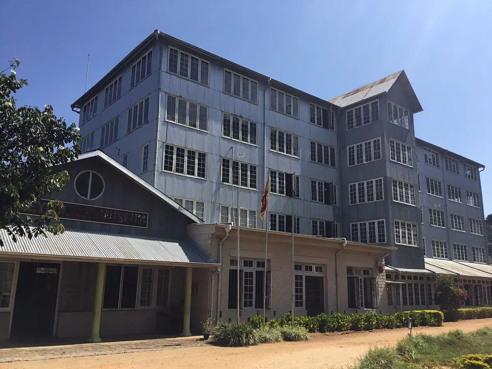
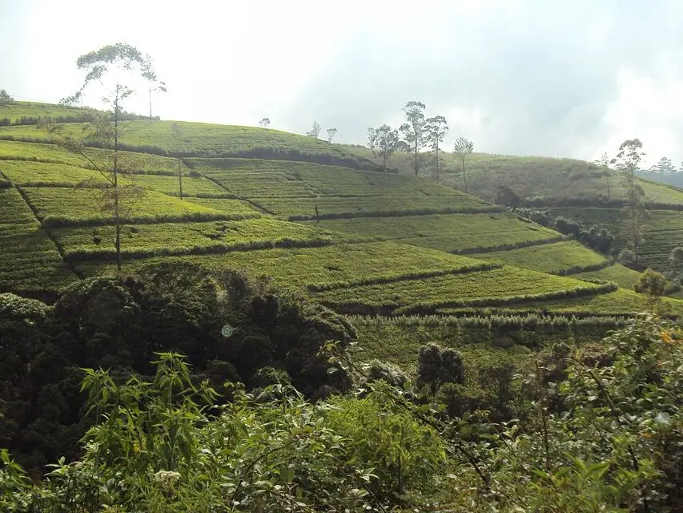
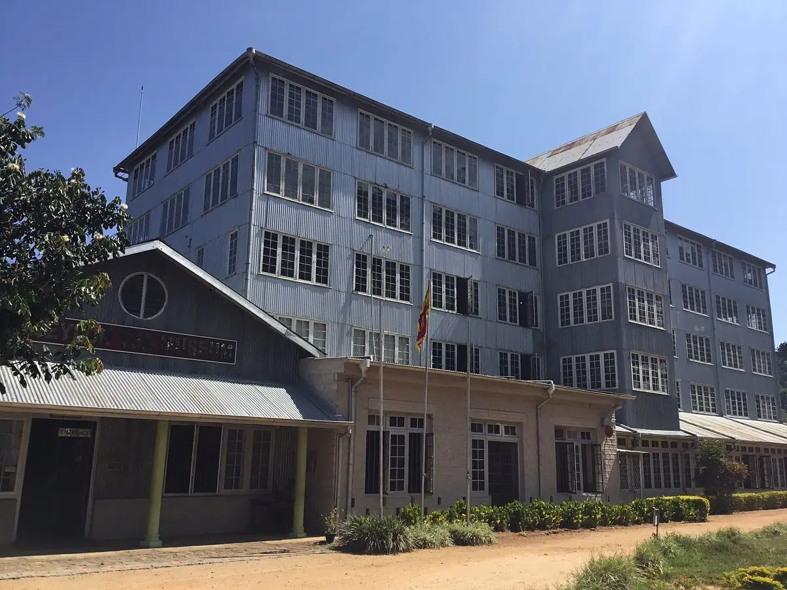
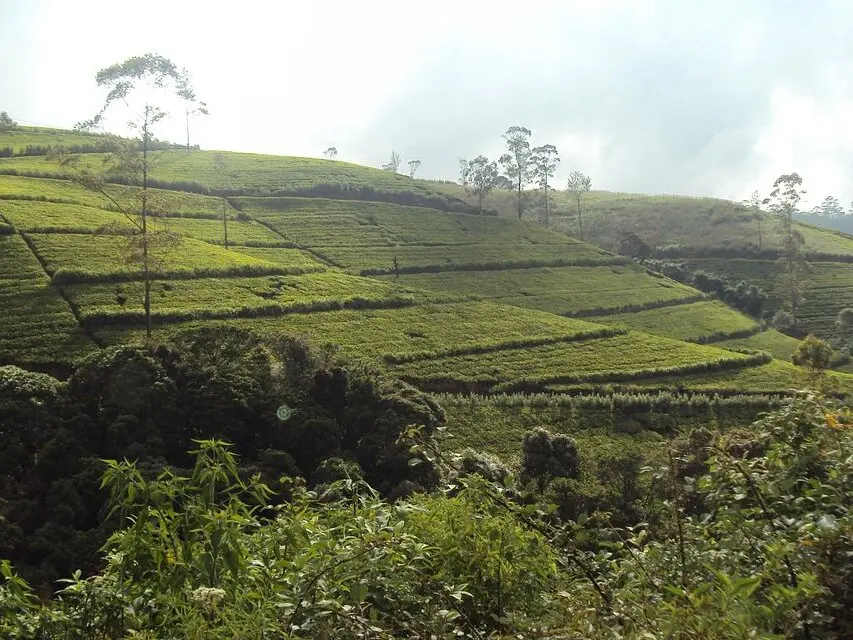

The Ceylon Tea Museum is located in Hantane, 5 kilometers from Kandy city. Hantane was one of the first areas successfully opened to tea cultivation after the failure of the coffee enterprise. Once a factory that now houses the museum is a relatively modern building constructed in the 1925. It is a typical example of its kind, large, light and airy, with most factory machinery housed on the ground floor and the three upper floors originally used to wither the freshly plucked tea-leaves. Today, the ground floor remains much as it was when the factory was operational, demonstrating the process of manufacture, while the upper floors house are used to house other exhibits and a library, a space for audio-visual presentations and a restaurant.
 


